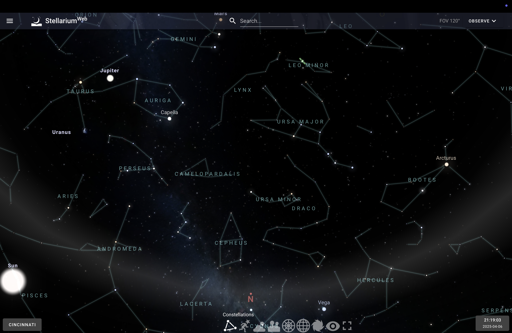

Purpose of the Visualization
Stellarium serves as a highly realistic, real-time 3D planetarium application that allows users to simulate the night sky. Its purpose is to make astronomy accessible and interactive, enabling both beginners and experienced stargazers to explore celestial objects and plan observations. It is widely used in education, public outreach, and hobbyist astronomy due to its immersive and intuitive interface.
Data Used in Stellarium
Stellarium utilizes extensive datasets such as the Hipparcos, Tycho-2, and NOMAD star catalogs, along with the Messier, NGC, and IC deep-sky object databases. Planetary positions are calculated using precise models like VSOP87 and ELP2000. Additional data includes cultural constellation mappings, atmospheric models, and panoramic landscape photography. Data is collected from ESA, NASA, and international observatories and formatted for accurate visualization.
Intended Users
The application is designed for a wide audience including the general public, amateur astronomers, students, educators, and researchers in archaeoastronomy. It is also used in digital planetariums and science education venues. Stellarium's multilingual support and intuitive interface make it accessible to all age groups and skill levels.
Questions & Insights Enabled by the Visualization
What questions can people ask and answer about this data using this visualization?
Users can ask questions like:
- What celestial objects are visible from my location tonight?
- When will the next lunar eclipse occur?
- How do constellations differ between various sky cultures?
- What did the sky look like from a particular place and date in history?
- Where will planets and satellites be at a future time?
How can they find the answers with this tool?
Stellarium provides an intuitive interface with the following features:
- Time & Location Controls: Simulate the sky from any location and any time in the past or future.
- Search Tool: Instantly locate celestial bodies and center them in the view.
- Overlays: Show constellations, coordinate grids, and atmospheric effects to aid navigation.
- Clickable Objects: Get detailed information on stars, planets, and other objects by clicking them.
Show some example insights someone can arrive at using this tool
- Discovering that Jupiter and Saturn will have a conjunction and appear close together in the sky.
- Learning that the Orion constellation is only visible in winter months from the Northern Hemisphere.
- Finding that Polaris is not visible from the Southern Hemisphere.
- Visualizing how the Milky Way moves and rotates through the night.
- Reconstructing the sky as seen during a historical event or over ancient sites.
Design and Interaction Critique
Stellarium features a natural sky rendering, minimal interface, and interactive controls. The design maximizes screen space while allowing for deep exploration through hidden menus, toggles, and keyboard shortcuts. Effective visual design includes atmospheric effects, scalable object labels, and accurate object motion. However, initial discoverability of advanced tools could be improved with guided tutorials or better onboarding for new users.
Limitations
- No built-in analytical tools or data output features
- Lacks advanced observation planning (limited to bookmarks)
- Manual updates required for latest comets, satellites
- Limited to Earth-based viewpoints
- Not designed for deep data analysis or professional astronomy research
Example Screenshots
Below are the screenshots from Stellarium that illustrate various toolbar features of the application:
-
0 – Default View (Night Sky + Toolbar):
-
1 – Constellation Lines:
 -
2 – Constellation Art Overlay:
-
3 – Atmosphere Toggle:
-
4 – Landscape View Enabled:
-
5 – Azimuthal Grid Display:
-
6 – Equatorial Grid Display:
-
7 – Deep Sky Objects Visualization:
-
8 – Night Mode (Red Light Filter):